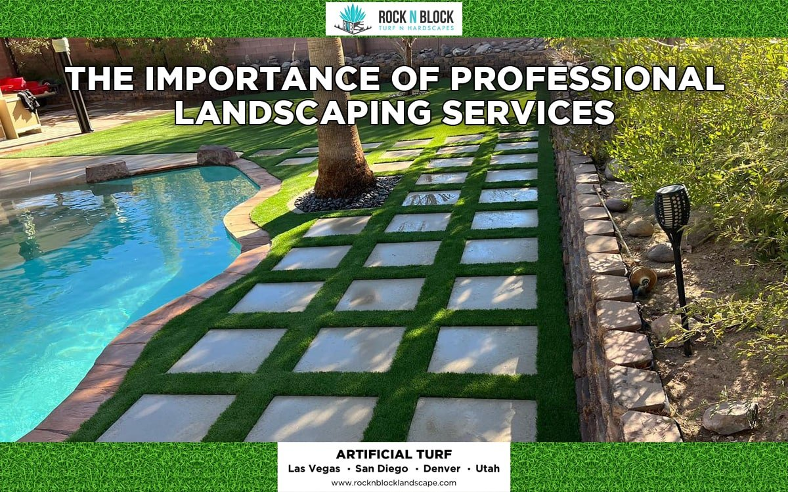

"outdoor kitchen Las Vegas","Embark on a journey toward outdoor kitchen Las Vegas. Many companies focus on resource-saving techniques, including drip irrigation and drought-resistant plants. Professionals in this region craft visually appealing, water-conscious environments well-suited to desert conditions. Best Landscaping Las Vegas Nevada. By blending native plants, rock formations, and efficient irrigation, you can establish a long-lasting outdoor retreat. Customers can enjoy sustainable, vibrant spaces that also reduce water usage and routine upkeep. Whether you prefer minimalistic rock gardens or lush greenery, skilled experts can tailor designs to your taste. Thoughtful lighting and smart controllers help create an appealing ambiance while maximizing efficiency. Simple additions, like seating areas or decorative pavers, can turn unused corners into welcoming havens. Expert Landscaping Services in Las Vegas Nevada. Incorporating region-specific materials leads to seamless integration with the surrounding desert environment. Our proven expertise in outdoor kitchen Las Vegas ensures that each project receives a tailored approach. Ultimately, careful planning and professional expertise guarantee outstanding outdoor transformations."
"fire pit Las Vegas","Open the door to fire pit Las Vegas. Professionals in this region craft visually appealing, water-conscious environments well-suited to desert conditions. By blending native plants, rock formations, and efficient irrigation, you can establish a long-lasting outdoor retreat. Many companies focus on resource-saving techniques, including drip irrigation and drought-resistant plants. Customers can enjoy sustainable, vibrant spaces that also reduce water usage and routine upkeep. Whether you prefer minimalistic rock gardens or lush greenery, skilled experts can tailor designs to your taste. Thoughtful lighting and smart controllers help create an appealing ambiance while maximizing efficiency. Simple additions, like seating areas or decorative pavers, can turn unused corners into welcoming havens. Incorporating region-specific materials leads to seamless integration with the surrounding desert environment. Our proven expertise in fire pit Las Vegas ensures that each project receives a tailored approach. Ultimately, careful planning and professional expertise guarantee outstanding outdoor transformations."
"water features Las Vegas","Optimize your property through water features Las Vegas. Many companies focus on resource-saving techniques, including drip irrigation and drought-resistant plants. Customers can enjoy sustainable, vibrant spaces that also reduce water usage and routine upkeep. Professionals in this region craft visually appealing, water-conscious environments well-suited to desert conditions. By blending native plants, rock formations, and efficient irrigation, you can establish a long-lasting outdoor retreat. Simple additions, like seating areas or decorative pavers, can turn unused corners into welcoming havens. Whether you prefer minimalistic rock gardens or lush greenery, skilled experts can tailor designs to your taste. Thoughtful lighting and smart controllers help create an appealing ambiance while maximizing efficiency. Incorporating region-specific materials leads to seamless integration with the surrounding desert environment. Our proven expertise in water features Las Vegas ensures that each project receives a tailored approach. Ultimately, careful planning and professional expertise guarantee outstanding outdoor transformations."
"landscape edging Las Vegas","Unlock sustainable benefits through landscape edging Las Vegas. Professionals in this region craft visually appealing, water-conscious environments well-suited to desert conditions. By blending native plants, rock formations, and efficient irrigation, you can establish a long-lasting outdoor retreat. Many companies focus on resource-saving techniques, including drip irrigation and drought-resistant plants. Customers can enjoy sustainable, vibrant spaces that also reduce water usage and routine upkeep. Whether you prefer minimalistic rock gardens or lush greenery, skilled experts can tailor designs to your taste. Thoughtful lighting and smart controllers help create an appealing ambiance while maximizing efficiency. Simple additions, like seating areas or decorative pavers, can turn unused corners into welcoming havens. Incorporating region-specific materials leads to seamless integration with the surrounding desert environment. Our proven expertise in landscape edging Las Vegas ensures that each project receives a tailored approach. Ultimately, careful planning and professional expertise guarantee outstanding outdoor transformations."
"landscape curbing Las Vegas","Open the door to landscape curbing Las Vegas. Many companies focus on resource-saving techniques, including drip irrigation and drought-resistant plants. Customers can enjoy sustainable, vibrant spaces that also reduce water usage and routine upkeep. Professionals in this region craft visually appealing, water-conscious environments well-suited to desert conditions. By blending native plants, rock formations, and efficient irrigation, you can establish a long-lasting outdoor retreat. Simple additions, like seating areas or decorative pavers, can turn unused corners into welcoming havens. Whether you prefer minimalistic rock gardens or lush greenery, skilled experts can tailor designs to your taste. Thoughtful lighting and smart controllers help create an appealing ambiance while maximizing efficiency. Incorporating region-specific materials leads to seamless integration with the surrounding desert environment. Our proven expertise in landscape curbing Las Vegas ensures that each project receives a tailored approach. Ultimately, careful planning and professional expertise guarantee outstanding outdoor transformations."
"landscape drainage Las Vegas","Enhance curb appeal via landscape drainage Las Vegas. Professionals in this region craft visually appealing, water-conscious environments well-suited to desert conditions. By blending native plants, rock formations, and efficient irrigation, you can establish a long-lasting outdoor retreat. Many companies focus on resource-saving techniques, including drip irrigation and drought-resistant plants. Customers can enjoy sustainable, vibrant spaces that also reduce water usage and routine upkeep. Whether you prefer minimalistic rock gardens or lush greenery, skilled experts can tailor designs to your taste. Thoughtful lighting and smart controllers help create an appealing ambiance while maximizing efficiency. Simple additions, like seating areas or decorative pavers, can turn unused corners into welcoming havens. Incorporating region-specific materials leads to seamless integration with the surrounding desert environment. Our proven expertise in landscape drainage Las Vegas ensures that each project receives a tailored approach. Top Landscaping in Las Vegas Nevada. Ultimately, careful planning and professional expertise guarantee outstanding outdoor transformations."
"landscape grading Las Vegas","Embrace the possibilities with landscape grading Las Vegas. Many companies focus on resource-saving techniques, including drip irrigation and drought-resistant plants. Customers can enjoy sustainable, vibrant spaces that also reduce water usage and routine upkeep. Professionals in this region craft visually appealing, water-conscious environments well-suited to desert conditions. By blending native plants, rock formations, and efficient irrigation, you can establish a long-lasting outdoor retreat. Simple additions, like seating areas or decorative pavers, can turn unused corners into welcoming havens. Whether you prefer minimalistic rock gardens or lush greenery, skilled experts can tailor designs to your taste. Thoughtful lighting and smart controllers help create an appealing ambiance while maximizing efficiency. Best Landscaping Nevada USA. Incorporating region-specific materials leads to seamless integration with the surrounding desert environment. Our proven expertise in landscape grading Las Vegas ensures that each project receives a tailored approach. Ultimately, careful planning and professional expertise guarantee outstanding outdoor transformations."
"landscape soil Las Vegas","Embark on a journey toward landscape soil Las Vegas. Professionals in this region craft visually appealing, water-conscious environments well-suited to desert conditions. By blending native plants, rock formations, and efficient irrigation, you can establish a long-lasting outdoor retreat. Many companies focus on resource-saving techniques, including drip irrigation and drought-resistant plants. Customers can enjoy sustainable, vibrant spaces that also reduce water usage and routine upkeep. Whether you prefer minimalistic rock gardens or lush greenery, skilled experts can tailor designs to your taste. Thoughtful lighting and smart controllers help create an appealing ambiance while maximizing efficiency. Simple additions, like seating areas or decorative pavers, can turn unused corners into welcoming havens. Incorporating region-specific materials leads to seamless integration with the surrounding desert environment. Our proven expertise in landscape soil Las Vegas ensures that each project receives a tailored approach.
Landscape planning Las Vegas - SEO content strategies
SEO content strategies
Google core updates
Ultimately, careful planning and professional expertise guarantee outstanding outdoor transformations."
"landscape mulch Las Vegas","Open the door to landscape mulch Las Vegas. Many companies focus on resource-saving techniques, including drip irrigation and drought-resistant plants. Customers can enjoy sustainable, vibrant spaces that also reduce water usage and routine upkeep. Professionals in this region craft visually appealing, water-conscious environments well-suited to desert conditions. By blending native plants, rock formations, and efficient irrigation, you can establish a long-lasting outdoor retreat. Simple additions, like seating areas or decorative pavers, can turn unused corners into welcoming havens. Whether you prefer minimalistic rock gardens or lush greenery, skilled experts can tailor designs to your taste. Thoughtful lighting and smart controllers help create an appealing ambiance while maximizing efficiency. Incorporating region-specific materials leads to seamless integration with the surrounding desert environment. Our proven expertise in landscape mulch Las Vegas ensures that each project receives a tailored approach. Ultimately, careful planning and professional expertise guarantee outstanding outdoor transformations."

pool landscaping Las Vegas
"landscape rocks Las Vegas","Experience unparalleled value in landscape rocks Las Vegas. Many companies focus on resource-saving techniques, including drip irrigation and drought-resistant plants. Customers can enjoy sustainable, vibrant spaces that also reduce water usage and routine upkeep. Professionals in this region craft visually appealing, water-conscious environments well-suited to desert conditions. By blending native plants, rock formations, and efficient irrigation, you can establish a long-lasting outdoor retreat. Simple additions, like seating areas or decorative pavers, can turn unused corners into welcoming havens. Whether you prefer minimalistic rock gardens or lush greenery, skilled experts can tailor designs to your taste. Thoughtful lighting and smart controllers help create an appealing ambiance while maximizing efficiency. Incorporating region-specific materials leads to seamless integration with the surrounding desert environment. Our proven expertise in landscape rocks Las Vegas ensures that each project receives a tailored approach. Ultimately, careful planning and professional expertise guarantee outstanding outdoor transformations."
"landscape boulders Las Vegas","Open the door to landscape boulders Las Vegas. Professionals in this region craft visually appealing, water-conscious environments well-suited to desert conditions. By blending native plants, rock formations, and efficient irrigation, you can establish a long-lasting outdoor retreat. Many companies focus on resource-saving techniques, including drip irrigation and drought-resistant plants. Customers can enjoy sustainable, vibrant spaces that also reduce water usage and routine upkeep. Whether you prefer minimalistic rock gardens or lush greenery, skilled experts can tailor designs to your taste. Thoughtful lighting and smart controllers help create an appealing ambiance while maximizing efficiency. Simple additions, like seating areas or decorative pavers, can turn unused corners into welcoming havens. Incorporating region-specific materials leads to seamless integration with the surrounding desert environment. Our proven expertise in landscape boulders Las Vegas ensures that each project receives a tailored approach. Ultimately, careful planning and professional expertise guarantee outstanding outdoor transformations."
"landscape trees Las Vegas","Immerse yourself in landscape trees Las Vegas. Many companies focus on resource-saving techniques, including drip irrigation and drought-resistant plants. Customers can enjoy sustainable, vibrant spaces that also reduce water usage and routine upkeep. Professionals in this region craft visually appealing, water-conscious environments well-suited to desert conditions. By blending native plants, rock formations, and efficient irrigation, you can establish a long-lasting outdoor retreat. Simple additions, like seating areas or decorative pavers, can turn unused corners into welcoming havens. Whether you prefer minimalistic rock gardens or lush greenery, skilled experts can tailor designs to your taste. Thoughtful lighting and smart controllers help create an appealing ambiance while maximizing efficiency. Incorporating region-specific materials leads to seamless integration with the surrounding desert environment. Nevada Las Vegas Landscaping Services. Our proven expertise in landscape trees Las Vegas ensures that each project receives a tailored approach. Ultimately, careful planning and professional expertise guarantee outstanding outdoor transformations."
desert landscaping Las Vegas
"landscape shrubs Las Vegas","Combine style and function in landscape shrubs Las Vegas. Professionals in this region craft visually appealing, water-conscious environments well-suited to desert conditions. By blending native plants, rock formations, and efficient irrigation, you can establish a long-lasting outdoor retreat. Many companies focus on resource-saving techniques, including drip irrigation and drought-resistant plants. Customers can enjoy sustainable, vibrant spaces that also reduce water usage and routine upkeep. Whether you prefer minimalistic rock gardens or lush greenery, skilled experts can tailor designs to your taste. Thoughtful lighting and smart controllers help create an appealing ambiance while maximizing efficiency. Simple additions, like seating areas or decorative pavers, can turn unused corners into welcoming havens. Incorporating region-specific materials leads to seamless integration with the surrounding desert environment. Our proven expertise in landscape shrubs Las Vegas ensures that each project receives a tailored approach. Ultimately, careful planning and professional expertise guarantee outstanding outdoor transformations."
"landscape flowers Las Vegas","Embark on a journey toward landscape flowers Las Vegas. Many companies focus on resource-saving techniques, including drip irrigation and drought-resistant plants. Professionals in this region craft visually appealing, water-conscious environments well-suited to desert conditions. By blending native plants, rock formations, and efficient irrigation, you can establish a long-lasting outdoor retreat. Customers can enjoy sustainable, vibrant spaces that also reduce water usage and routine upkeep. Whether you prefer minimalistic rock gardens or lush greenery, skilled experts can tailor designs to your taste. Thoughtful lighting and smart controllers help create an appealing ambiance while maximizing efficiency. Simple additions, like seating areas or decorative pavers, can turn unused corners into welcoming havens. Incorporating region-specific materials leads to seamless integration with the surrounding desert environment. Our proven expertise in landscape flowers Las Vegas ensures that each project receives a tailored approach. Ultimately, careful planning and professional expertise guarantee outstanding outdoor transformations."
"landscape turf Las Vegas","Open the door to landscape turf Las Vegas. Many companies focus on resource-saving techniques, including drip irrigation and drought-resistant plants. Customers can enjoy sustainable, vibrant spaces that also reduce water usage and routine upkeep. Professionals in this region craft visually appealing, water-conscious environments well-suited to desert conditions. By blending native plants, rock formations, and efficient irrigation, you can establish a long-lasting outdoor retreat. Simple additions, like seating areas or decorative pavers, can turn unused corners into welcoming havens. Whether you prefer minimalistic rock gardens or lush greenery, skilled experts can tailor designs to your taste. Thoughtful lighting and smart controllers help create an appealing ambiance while maximizing efficiency. Incorporating region-specific materials leads to seamless integration with the surrounding desert environment. Our proven expertise in landscape turf Las Vegas ensures that each project receives a tailored approach. Ultimately, careful planning and professional expertise guarantee outstanding outdoor transformations."
landscape pruning Las Vegas
"landscape lawn care Las Vegas","Embrace the possibilities with landscape lawn care Las Vegas. Professionals in this region craft visually appealing, water-conscious environments well-suited to desert conditions. By blending native plants, rock formations, and efficient irrigation, you can establish a long-lasting outdoor retreat. Many companies focus on resource-saving techniques, including drip irrigation and drought-resistant plants. Customers can enjoy sustainable, vibrant spaces that also reduce water usage and routine upkeep. Whether you prefer minimalistic rock gardens or lush greenery, skilled experts can tailor designs to your taste. Thoughtful lighting and smart controllers help create an appealing ambiance while maximizing efficiency. Simple additions, like seating areas or decorative pavers, can turn unused corners into welcoming havens. Incorporating region-specific materials leads to seamless integration with the surrounding desert environment. Our proven expertise in landscape lawn care Las Vegas ensures that each project receives a tailored approach. Ultimately, careful planning and professional expertise guarantee outstanding outdoor transformations."
"landscape pest control Las Vegas","Explore a new dimension of landscape pest control Las Vegas. Many companies focus on resource-saving techniques, including drip irrigation and drought-resistant plants. Customers can enjoy sustainable, vibrant spaces that also reduce water usage and routine upkeep. Professionals in this region craft visually appealing, water-conscious environments well-suited to desert conditions. By blending native plants, rock formations, and efficient irrigation, you can establish a long-lasting outdoor retreat. Simple additions, like seating areas or decorative pavers, can turn unused corners into welcoming havens. Whether you prefer minimalistic rock gardens or lush greenery, skilled experts can tailor designs to your taste. Thoughtful lighting and smart controllers help create an appealing ambiance while maximizing efficiency. Incorporating region-specific materials leads to seamless integration with the surrounding desert environment. Our proven expertise in landscape pest control Las Vegas ensures that each project receives a tailored approach. Ultimately, careful planning and professional expertise guarantee outstanding outdoor transformations."
"landscape fertilization Las Vegas","Achieve remarkable results with landscape fertilization Las Vegas. Professionals in this region craft visually appealing, water-conscious environments well-suited to desert conditions. By blending native plants, rock formations, and efficient irrigation, you can establish a long-lasting outdoor retreat. Many companies focus on resource-saving techniques, including drip irrigation and drought-resistant plants. Customers can enjoy sustainable, vibrant spaces that also reduce water usage and routine upkeep. Whether you prefer minimalistic rock gardens or lush greenery, skilled experts can tailor designs to your taste. Thoughtful lighting and smart controllers help create an appealing ambiance while maximizing efficiency. Simple additions, like seating areas or decorative pavers, can turn unused corners into welcoming havens. Incorporating region-specific materials leads to seamless integration with the surrounding desert environment.
Landscape planning Las Vegas - SEO content strategies
Googles featured videos
Google search indexing
Our proven expertise in landscape fertilization Las Vegas ensures that each project receives a tailored approach. Ultimately, careful planning and professional expertise guarantee outstanding outdoor transformations."
rock landscaping Las Vegas
"landscape trimming Las Vegas","Immerse yourself in landscape trimming Las Vegas. Many companies focus on resource-saving techniques, including drip irrigation and drought-resistant plants. Customers can enjoy sustainable, vibrant spaces that also reduce water usage and routine upkeep. Professionals in this region craft visually appealing, water-conscious environments well-suited to desert conditions. By blending native plants, rock formations, and efficient irrigation, you can establish a long-lasting outdoor retreat. Simple additions, like seating areas or decorative pavers, can turn unused corners into welcoming havens. Whether you prefer minimalistic rock gardens or lush greenery, skilled experts can tailor designs to your taste. Thoughtful lighting and smart controllers help create an appealing ambiance while maximizing efficiency. Incorporating region-specific materials leads to seamless integration with the surrounding desert environment. Our proven expertise in landscape trimming Las Vegas ensures that each project receives a tailored approach. Ultimately, careful planning and professional expertise guarantee outstanding outdoor transformations."
"landscape pruning Las Vegas","Embrace the possibilities with landscape pruning Las Vegas. Professionals in this region craft visually appealing, water-conscious environments well-suited to desert conditions. By blending native plants, rock formations, and efficient irrigation, you can establish a long-lasting outdoor retreat. Many companies focus on resource-saving techniques, including drip irrigation and drought-resistant plants. Customers can enjoy sustainable, vibrant spaces that also reduce water usage and routine upkeep. Whether you prefer minimalistic rock gardens or lush greenery, skilled experts can tailor designs to your taste. Thoughtful lighting and smart controllers help create an appealing ambiance while maximizing efficiency. Simple additions, like seating areas or decorative pavers, can turn unused corners into welcoming havens. Incorporating region-specific materials leads to seamless integration with the surrounding desert environment. Our proven expertise in landscape pruning Las Vegas ensures that each project receives a tailored approach. Ultimately, careful planning and professional expertise guarantee outstanding outdoor transformations."
"landscape clean up Las Vegas","Explore a new dimension of landscape clean up Las Vegas. Many companies focus on resource-saving techniques, including drip irrigation and drought-resistant plants. Customers can enjoy sustainable, vibrant spaces that also reduce water usage and routine upkeep. Professionals in this region craft visually appealing, water-conscious environments well-suited to desert conditions. By blending native plants, rock formations, and efficient irrigation, you can establish a long-lasting outdoor retreat. Simple additions, like seating areas or decorative pavers, can turn unused corners into welcoming havens. Whether you prefer minimalistic rock gardens or lush greenery, skilled experts can tailor designs to your taste. Thoughtful lighting and smart controllers help create an appealing ambiance while maximizing efficiency. Incorporating region-specific materials leads to seamless integration with the surrounding desert environment. Our proven expertise in landscape clean up Las Vegas ensures that each project receives a tailored approach. Ultimately, careful planning and professional expertise guarantee outstanding outdoor transformations."
About landscape architecture
Design of outdoor public areas, landmarks, and structures
Stourhead in Wiltshire, England, designed by Henry Hoare (1705–1785), "the first landscape gardener, who showed in a single work, genius of the highest order"[1]
Landscape architecture is the design of outdoor areas, landmarks, and structures to achieve environmental, social-behavioural, or aesthetic outcomes.[2] It involves the systematic design and general engineering of various structures for construction and human use, investigation of existing social, ecological, and soil conditions and processes in the landscape, and the design of other interventions that will produce desired outcomes.
The scope of the profession is broad and can be subdivided into several sub-categories including professional or licensed landscape architects who are regulated by governmental agencies and possess the expertise to design a wide range of structures and landforms for human use; landscape design which is not a licensed profession; site planning; stormwater management; erosion control; environmental restoration; public realm, parks, recreation and urban planning; visual resource management; green infrastructure planning and provision; and private estate and residence landscape master planning and design; all at varying scales of design, planning and management. A practitioner in the profession of landscape architecture may be called a landscape architect; however, in jurisdictions where professional licenses are required it is often only those who possess a landscape architect license who can be called a landscape architect.
A canal design focused on esthetical landscape architecture in Stockholm, Sweden.
A river with concrete walls like those of a flood control channel, a historic flood-control measure using landscape engineering in Houston, Texas. Such channelling, intended to be strictly functional, may make flooding worse, by speeding the flow instead of spreading the pulse of floodwater.[3][4][5]
The most valuable contribution can be made at the first stage of a project to generate ideas with technical understanding and creative flair for the design, organization, and use of spaces. The landscape architect can conceive the overall concept and prepare the master plan, from which detailed design drawings and technical specifications are prepared. They can also review proposals to authorize and supervise contracts for the construction work. Other skills include preparing design impact assessments, conducting environmental assessments and audits, and serving as an expert witness at inquiries on land use issues. The majority of their time will most likely be spent inside an office building designing and preparing models for clients.[citation needed]
For the period before 1800, the history of landscape gardening (later called landscape architecture) is largely that of master planning and garden design for manor houses, palaces and royal properties. An example is the extensive work by André Le Nôtre for King Louis XIV of France on the Gardens of Versailles. The first person to write of making a landscape was Joseph Addison in 1712. The term landscape architecture was invented by Gilbert Laing Meason in 1828, and John Claudius Loudon (1783–1843) was instrumental in the adoption of the term landscape architecture by the modern profession. He took up the term from Meason and gave it publicity in his Encyclopedias and in his 1840 book on the Landscape Gardening and Landscape Architecture of the Late Humphry Repton.[6]
John Claudius Loudon was an established and influential horticultural journalist and Scottish landscape architect whose writings were instrumental in shaping Victorian taste in gardens, public parks, and architecture.[7] In the Landscape Gardening and Landscape Architecture of the Late Humphry Repton,Loudon describes two distinct styles of landscape gardening existing at the beginning of the 19th century: geometric and natural.[6]Loudon wrote that each style reflected a different stage of society. The geometric style was “most striking and pleasing,” displaying wealth and taste in an “early state of society” and in “countries where the general scenery was wild, irregular, and natural, and man, comparatively, uncultivated and unrefined.”[6] The natural style was used in “modern times” and in countries where “society is in a higher state of cultivation," displaying wealth and taste through the sacrifice of profitable lands to make room for such designs. [6]
The prominent English landscape designer Humphry Repton (1752-1818) echoed similar ideas in his work and design ideas. In his writings on the use of delineated spaces (e.g. courtyards, terrace walls, fences), Repton states that while the motive for defense no longer exists, the features are still useful in separating "the gardens, which belong to man, and the forest, or desert, which belongs to the wild denizens."[6]Repton refers to Indigenous peoples as "uncivilized human beings, against whom some decided line of defense was absolutely necessary.”[6]
The practice of landscape architecture spread from the Old to the New World. The term "landscape architect" was used as a professional title by Frederick Law Olmsted in the United States in 1863[citation needed] and Andrew Jackson Downing, another early American landscape designer, was editor of The Horticulturist magazine (1846–52). In 1841 his first book, A Treatise on the Theory and Practice of Landscape Gardening, Adapted to North America, was published to a great success; it was the first book of its kind published in the United States.[8] During the latter 19th century, the term landscape architect began to be used by professional landscapes designers, and was firmly established after Frederick Law Olmsted Jr. and Beatrix Jones (later Farrand) with others founded the American Society of Landscape Architects (ASLA) in 1899. IFLA was founded at Cambridge, England, in 1948 with Sir Geoffrey Jellicoe as its first president, representing 15 countries from Europe and North America. Later, in 1978, IFLA's Headquarters were established in Versailles.[9][10][11]
Ecological design (any aspect of design that minimizes environmentally destructive impacts by integrating itself with natural processes and sustainability)
Landscape scientists have specialist skills such as soil science, hydrology, geomorphology or botany that they relate to the practical problems of landscape work. Their projects can range from site surveys to the ecological assessment of broad areas for planning or management purposes. They may also report on the impact of development or the importance of particular species in a given area.[citation needed]
Landscape planners are concerned with landscape planning for the location, scenic, ecological and recreational aspects of urban, rural, and coastal land use. Their work is embodied in written statements of policy and strategy, and their remit includes master planning for new developments, landscape evaluations and assessments, and preparing countryside management or policy plans. Some may also apply an additional specialism such as landscape archaeology or law to the process of landscape planning.[citation needed]
The combination of the traditional landscape gardening and the emerging city planning combined gave landscape architecture its unique focus. Frederick Law Olmsted used the term 'landscape architecture' using the word as a profession for the first time when designing the Central Park.
Since this period urban planning has developed into a separate independent profession that has incorporated important contributions from other fields such as civil engineering, architecture and public administration. Urban Planners are qualified to perform tasks independent of landscape architects, and in general, the curriculum of landscape architecture programs do not prepare students to become urban planners.[16]
Landscape architecture continues to develop as a design discipline and to respond to the various movements in architecture and design throughout the 20th and 21st centuries. Thomas Church was a mid-century landscape architect significant in the profession. Roberto Burle Marx in Brazil combined the International style and native Brazilian plants and culture for a new aesthetic. Innovation continues today solving challenging problems with contemporary design solutions for master planning, landscapes, and gardens.[citation needed]
Ian McHarg was known for introducing environmental concerns in landscape architecture.[17][18] He popularized a system of analyzing the layers of a site in order to compile a complete understanding of the qualitative attributes of a place. This system became the foundation of today's Geographic Information Systems (GIS). McHarg would give every qualitative aspect of the site a layer, such as the history, hydrology, topography, vegetation, etc. GIS software is ubiquitously used in the landscape architecture profession today to analyze materials in and on the Earth's surface and is similarly used by urban planners, geographers, forestry and natural resources professionals, etc.[citation needed]
European nations enabled the widespread circulation of urban planning strategies by transferring landscaping ideas and practices to overseas colonies. The green belt was a popular landscape practice exported by Britain onto colonial territories such as Haifa (1918-1948).[19] Spatial mechanisms like the green belt, implemented through the Haifa Bay Plan and the British "Grand Model," were used to enforce political control and civic order and extend western ideas of progress and development.[19] The Greater London Regional Planning Committee accepted the green belt concept which formed the basis of the 1938 Green Belt Act. The planning prototype demarcated open spaces, distinguished between city and countryside, limited urban growth, and created zoning divisions.[19] It was used extensively in the British colonies to facilitate British rule through the organized division of landscape and populations. [19]
Indigenous land management practices create constantly changing landscapes through the use of vegetation and natural systems, contrasting with western epistemologies of the discipline that separate ornament from function.[20] The discipline of landscape architecture favors western designs made from structured materials and geometric forms.[20] Landscape architecture history books tend to include projects that contain constructed architectural elements that persist over time, excluding many Indigenous landscape-based designs.[20]
Landscape architecture textbooks often place Indigenous peoples as a prefix to the official start of the discipline. The widely read landscape history text The Landscape of Man (1964) offers a global history of the designed landscape from past to present, featuring African and other Indigenous peoples in its discussions of Paleolithic man between 500,000 and 8,000 BCE in relation to human migration.[20] Indigenous land-management practices are described as archaeological rather than a part of contemporary practice. Gardens in Time (1980) also places Indigenous practice as prehistory at the beginning of the landscape architecture timeline. Authors John and Ray Oldham describe Aborigines of Australia as “survivors of an ancient way of life” who provide an opportunity to examine western Australia as a “meeting place of a prehistoric man.”[20]
In the late 18th century, the landscapes created by aboriginal land and fire management practices appealed to English settlers in Australia.[20] Journals from the period of early white settlement note the landscape resembling parks and popular designs in English landscape gardens of the same period.[20] In England, these designs were considered sophisticated and celebrated for the intentional sacrifice of usable land. In Australia, the park-like condition was used to justify British control, citing its emptiness and lack of productive use as a basis for the dispossession of Aboriginal people. [20]
Landscape Architects are generally required to have university or graduate education from an accredited landscape architecture degree program, which can vary in length and degree title. They learn how to create projects from scratch, such as residential or commercial planting and designing outdoor living spaces[21] they are willing to work with others to get a better outcome for the customers when doing a project; they will have to learn the basics of how to create a project on a manner of time and will require to get your license in a certain state to be allowed to work; students of Landscape Architects will learn how to interact with clients and will learn how to explain a design from scratch when giving the final project.[22]
In many countries, a professional institute, comprising members of the professional community, exists in order to protect the standing of the profession and promote its interests, and sometimes also regulate the practice of landscape architecture. The standard and strength of legal regulations governing landscape architecture practice varies from nation to nation, with some requiring licensure in order to practice; and some having little or no regulation. In Europe, North America, parts of South America, Australia, India, and New Zealand, landscape architecture is a regulated profession.[24]
Since 1889, with the arrival of the French architect and urbanist landscaper Carlos Thays, recommended to recreate the National Capital's parks and public gardens, it was consolidated an apprentice and training program in landscaping that eventually became a regulated profession, currently the leading academic institution is the UBA University of Buenos Aires"UBA Facultad de Arquitectura, Diseño y Urbanismo" (Faculty of Architecture, Design and Urbanism) offering a Bacherlor's degree in Urban Landscaping Design and Planning, the profession itself is regulated by the National Ministry of Urban Planning of Argentina and the Institute of the Buenos Aires Botanical Garden.[citation needed]
The Australian Institute of Landscape Architects (AILA) provides accreditation of university degrees and non-statutory professional registration for landscape architects. Once recognized by AILA, landscape architects use the title 'Registered Landscape Architect' across the six states and territories within Australia.[citation needed]
AILA's system of professional recognition is a national system overseen by the AILA National Office in Canberra. To apply for AILA Registration, an applicant usually needs to satisfy a number of pre-requisites, including university qualification, a minimum number years of practice and a record of professional experience.[25]
Landscape Architecture within Australia covers a broad spectrum of planning, design, management, and research. From specialist design services for government and private sector developments through to specialist professional advice as an expert witness.[citation needed]
In Canada, landscape architecture, like law and medicine, is a self-regulating profession pursuant to provincial statute. For example, Ontario's profession is governed by the Ontario Association of Landscape Architects pursuant to the Ontario Association of Landscape Architects Act. Landscape architects in Ontario, British Columbia, and Alberta must complete the specified components of L.A.R.E (Landscape Architecture Registration Examination) as a prerequisite to full professional standing.
ISLA (Indonesia Society of Landscape Architects) is the Indonesian society for professional landscape architects formed on 4 February 1978 and is a member of IFLA APR and IFLA World. The main aim is to increase the dignity of the professional members of landscape architects by increasing their activity role in community service, national and international development. The management of IALI consists of National Administrators who are supported by 20 Regional Administrators (Provincial level) and 3 Branch Managers at city level throughout Indonesia.[citation needed]
Landscape architecture education in Indonesia was held in 18 universities, which graduated D3, Bachelor and Magister graduates. The landscape architecture education incorporate in Association of Indonesian Landscape Architecture Education.[citation needed]
AIAPP (Associazione Italiana Architettura del Paesaggio) is the Italian association of professional landscape architects formed in 1950 and is a member of IFLA and IFLA Europe (formerly known as EFLA). AIAPP is in the process of contesting this new law which has given the Architects' Association the new title of Architects, Landscape Architects, Planners and Conservationists whether or not they have had any training or experience in any of these fields other than Architecture. In Italy, there are several different professions involved in landscape architecture:
Architects
Landscape designers
Doctor landscape agronomists and Doctor landscape foresters, often called Landscape agronomists.
In April 2013, NZILA jointly with AILA, hosted the 50th International Federation of Landscape Architects (IFLA) World Congress in Auckland, New Zealand. The World Congress is an international conference where Landscape Architects from all around the globe meet to share ideas around a particular topic.[citation needed]
Within NZ, Members of NZILA when they achieve their professional standing, can use the title Registered Landscape Architect NZILA.[citation needed]
NZILA provides an education policy and an accreditation process to review education programme providers; currently there are three accredited undergraduate Landscape Architecture programmes in New Zealand. Lincoln University also has an accredited masters programme in landscape architecture.[citation needed]
Landscape architecture in Norway was established in 1919 at the Norwegian University of Life Sciences (NMBU) at Ås. The Norwegian School of Landscape Architecture at the Faculty of Landscape and Society is responsible for Europe's oldest landscape architecture education on an academic level. The departments areas include design and design of cities and places, garden art history, landscape engineering, greenery, zone planning, site development, place making and place keeping.[citation needed]
In May 1962, Joane Pim, Ann Sutton, Peter Leutscher and Roelf Botha (considered the forefathers of the profession in South Africa) established the Institute for Landscape Architects, now known as the Institute for Landscape Architecture in South Africa (ILASA).[28] ILASA is a voluntary organisation registered with the South African Council for the Landscape Architectural Profession (SACLAP).[29] It consists of three regional bodies, namely, Gauteng, KwaZula-Natal and the Western Cape. ILASA's mission is to advance the profession of landscape architecture and uphold high standards of professional service to its members, and to represent the profession of landscape architecture in any matter which may affect the interests of the members of the institute. ILASA holds the country's membership with The International Federation of Landscape Architects (IFLA).[30]
In South Africa, the profession is regulated by SACLAP, established as a statutory council in terms of Section 2 of the South African Council for the Landscape Architectural Profession Act – Act 45 of 2000. The Council evolved out of the Board of Control for Landscape Architects (BOCLASA), which functioned under the Council of Architects in terms of The Architectural Act, Act 73 of 1970. SACLAP's mission is to establish, direct, sustain and ensure a high level of professional responsibilities and ethical conduct within the art and science of landscape architecture with honesty, dignity and integrity in the broad interest of public health, safety and welfare of the community.[citation needed]
After completion of an accredited under-graduate and/or post-graduate qualification in landscape architecture at either the University of Cape Town or the University of Pretoria, or landscape technology at the Cape Peninsula University of Technology, professional registration is attained via a mandatory mentored candidacy period (minimum of two years) and sitting of the professional registration exam. After successfully completing the exam, the individual is entitled to the status of Professional Landscape Architect or Professional Landscape Technologist.[citation needed]
Architects Sweden, Sveriges Arkitekter, is the collective trade union and professional organisation for all architects, including landscape architects, in Sweden. The professional body is a member of IFLA (International Federation of Landscape Architects) as well as IFLA Europe.
As a landscape architect, anyone can become a member of Architects Sweden if they have a national or international university degree that is approved by the association. If the degree is from within the European Union, Architects Sweden approves Landscape architect educations listed by IFLA Europe. For educations outside the EU, the association makes an assessment on a statement from the Swedish Council for Higher Education (UHR).
The UK's professional body is the Landscape Institute (LI). It is a chartered body that accredits landscape professionals and university courses. At present there are fifteen accredited programmes in the UK. Membership of the LI is available to students, academics and professionals, and there are over 3,000 professionally qualified members.[citation needed]
The Institute provides services to assist members including support and promotion of the work of landscape architects; information and guidance to the public and industry about the specific expertise offered by those in the profession; and training and educational advice to students and professionals looking to build upon their experience.[citation needed]
In 2008, the LI launched a major recruitment drive entitled "I want to be a Landscape Architect" to encourage the study of Landscape Architecture. The campaign aimed to raise the profile of landscape architecture and highlight its valuable role in building sustainable communities and fighting climate change.[31]
As of July 2018, the "I want to be a Landscape Architect" initiative was replaced by a brand new careers campaign entitled #ChooseLandscape, which aims to raise awareness of landscape as a profession; improve and increase access to landscape education; and inspire young people to choose landscape as a career.[32] This new campaign includes other landscape-related professions such as landscape management, landscape planning, landscape science and urban design.[33]
The National Mall in Washington, D.C. includes many examples of landscape architecture based on historical memorials and monuments.
In the United States, landscape architecture is regulated by individual state governments. For a landscape architect, obtaining licensure requires advanced education and work experience, plus passage of the national examination called the Landscape Architect Registration Examination (L.A.R.E.). Licensing is overseen at the national level by the Council of Landscape Architectural Registration Boards (CLARB). Several states require passage of a state exam as well.
Landscape architecture has been identified as an above-average growth profession by the US Bureau of Labor Statistics and was listed in U.S. News & World Report's list of Best Jobs to Have in 2006, 2007, 2008, 2009 and 2010.[34] The national trade association for United States landscape architects is the American Society of Landscape Architects. Frederick Law Olmsted, who designed Central Park in New York City, is known as the "father of American landscape architecture".[35]
^Van Assche, K., Beunen, R., Duineveld, M., & de Jong, H. (2013). Co-evolutions of planning and design: Risks and benefits of design perspectives in planning systems. Planning Theory, 12(2), 177–198.
^National Park Service (2000). Cultural Landscape Report: Dumbarton Oaks Park, Rock Creek Park. Washington, D.C.: U.S. Dept. of the Interior.
^"Bulletin of Information for the AICP Comprehensive Planning Examination"(PDF). www.planning.org. Retrieved 29 August 2016. There are important distinctions between planners and allied professionals and between planning and related fields. Planners approach problems comprehensively, have a long-range perspective, and deal with unique place-based issues. Although people in related professions (e.g., law, architecture, landscape architecture, engineering, real estate development, etc.) and disciplines (humanities, psychology, etc.) often work with planners, they do not necessarily have the same knowledge base, skillset, and approach.
^Ozio, Ron (6 March 2001). "Obituary: Ian McHarg Dies". Penn News. University of Pennsylvania. Archived from the original on 16 September 2015. Retrieved 4 June 2014.
A garden is a planned space, usually outdoors, set aside for the cultivation, display, and enjoyment of plants and other forms of nature. The single feature identifying even the wildest wild garden is control. The garden can incorporate both natural and artificial materials.[1]
Gardens often have design features including statuary, follies, pergolas, trellises, stumperies, dry creek beds, and water features such as fountains, ponds (with or without fish), waterfalls or creeks. Some gardens are for ornamental purposes only, while others also produce food crops, sometimes in separate areas, or sometimes intermixed with the ornamental plants. Food-producing gardens are distinguished from farms by their smaller scale, more labor-intensive methods, and their purpose (enjoyment of a pastime or self-sustenance rather than producing for sale, as in a market garden). Flower gardens combine plants of different heights, colors, textures, and fragrances to create interest and delight the senses.[2]
The most common form today is a residential or public garden, but the term garden has traditionally been a more general one. Zoos, which display wild animals in simulated natural habitats, were formerly called zoological gardens.[3][4] Western gardens are almost universally based on plants, with garden, which etymologically implies enclosure, often signifying a shortened form of botanical garden. Some traditional types of eastern gardens, such as Zen gardens, however, use plants sparsely or not at all. Landscape gardens, on the other hand, such as the English landscape gardens first developed in the 18th century, may decide to omit flowers altogether.
The etymology of the word gardening refers to enclosure: it is from Middle English gardin, from Anglo-French gardin, jardin, of Germanic origin; akin to Old High German gard, gart, an enclosure or compound, as in Stuttgart. See Grad (Slavic settlement) for more complete etymology.[6] The words yard, court, and Latin hortus (meaning "garden", hence horticulture and orchard), are cognates—all referring to a defined enclosed space.[7]
The term "garden" in British English refers to a small enclosed area of land, usually adjoining a building.[8] This would be referred to as a yard in American English.[9]
The earliest recorded Chinese gardens were created in the valley of the Yellow River, during the Shang dynasty (1600–1046 BC). These gardens were large enclosed parks where the kings and nobles hunted game, or where fruit and vegetables were grown. Early inscriptions from this period, carved on tortoise shells, have three Chinese characters for garden, you, pu and yuan. You was a royal garden where birds and animals were kept, while pu was a garden for plants. During the Qin dynasty (221–206 BC), yuan became the character for all gardens.[10] The old character for yuan is a small picture of a garden; it is enclosed in a square which can represent a wall, and has symbols which can represent the plan of a structure, a small square which can represent a pond, and a symbol for a plantation or a pomegranate tree.[11]
A famous royal garden of the late Shang dynasty was the Terrace, Pond and Park of the Spirit (Lingtai, Lingzhao Lingyou) built by King Wenwang west of his capital city, Yin. The park was described in the Classic of Poetry this way:
The King makes his promenade in the Park of the Spirit,
The deer are kneeling on the grass, feeding their fawns,
The deer are beautiful and resplendent.
The immaculate cranes have plumes of a brilliant white.
The King makes his promenade to the Pond of the Spirit,
During the Spring and Autumn period (722–481 BC), in 535 BC, the Terrace of Shanghua, with lavishly decorated palaces, was built by King Jing of the Zhou dynasty. In 505 BC, an even more elaborate garden, the Terrace of Gusu, was begun. It was located on the side of a mountain, and included a series of terraces connected by galleries, along with a lake where boats in the form of blue dragons navigated. From the highest terrace, a view extended as far as Lake Tai, the Great Lake.[15]
Manasollasa is a twelfth century Sanskrit text that offers details on garden design and a variety of other subjects.[16] Both public parks and woodland gardens are described, with about 40 types of trees recommended for the park in the Vana-krida chapter.[16][17]Shilparatna, a text from the sixteenth century, states that flower gardens or public parks should be located in the northern portion of a town.[18]
The earliest recorded Japanese gardens were the pleasure gardens of the Emperors and nobles. They were mentioned in several brief passages of the Nihon Shoki, the first chronicle of Japanese history, published in 720 CE. In spring 74 CE, the chronicle recorded: "The Emperor KeikÅ put a few carp into a pond, and rejoiced to see them morning and evening". The following year, "The Emperor launched a double-hulled boat in the pond of Ijishi at Ihare, and went aboard with his imperial concubine, and they feasted sumptuously together". In 486, the chronicle recorded that "The Emperor KenzÅ went into the garden and feasted at the edge of a winding stream".[19]
Korean gardens are a type of garden described as being natural, informal, simple and unforced, seeking to merge with the natural world.[20] They have a history that goes back more than two thousand years,[21] but are little known in the west. The oldest records date to the Three Kingdoms period (57 BC – 668 AD) when architecture and palace gardens showed a development noted in the Korean History of the Three Kingdoms.
Gardening was not recognized as an art form in Europe until the mid 16th century when it entered the political discourse, as a symbol of the concept of the "ideal republic". Evoking utopian imagery of the Garden of Eden, a time of abundance and plenty where humans didn't know hunger or the conflicts that arose from property disputes. John Evelyn wrote in the early 17th century, "there is not a more laborious life then is that of a good Gard'ners; but a labour full of tranquility and satisfaction; Natural and Instructive, and such as (if any) contributes to Piety and Contemplation."[22] During the era of Enclosures, the agrarian collectivism of the feudal age was idealized in literary "fantasies of liberating regression to garden and wilderness".[23]
Following his campaign in Italy in 1495, where he saw the gardens and castles of Naples, King Charles VIII brought Italian craftsmen and garden designers, such as Pacello da Mercogliano, from Naples and ordered the construction of Italian-style gardens at his residence at the Château d'Amboise and at Château Gaillard, another private résidence in Amboise. His successor Henry II, who had also travelled to Italy and had met Leonardo da Vinci, created an Italian garden nearby at the Château de Blois.[24] Beginning in 1528, King Francis I created new gardens at the Château de Fontainebleau, which featured fountains, parterres, a forest of pine trees brought from Provence, and the first artificial grotto in France.[25] The Château de Chenonceau had two gardens in the new style, one created for Diane de Poitiers in 1551, and a second for Catherine de' Medici in 1560.[26] In 1536, the architect Philibert de l'Orme, upon his return from Rome, created the gardens of the Château d'Anet following the Italian rules of proportion. The carefully prepared harmony of Anet, with its parterres and surfaces of water integrated with sections of greenery, became one of the earliest and most influential examples of the classic French garden.[27]
The French formal garden (French: jardin à la française) contrasted with the design principles of the English landscape garden (French: jardin à l'anglaise) namely, to "force nature" instead of leaving it undisturbed.[28] Typical French formal gardens had "parterres, geometrical shapes and neatly clipped topiary", in contrast to the English style of garden in which "plants and shrubs seem to grow naturally without artifice."[29] By the mid-17th century axial symmetry had ascended to prominence in the French gardening traditions of Andre Mollet and Jacques Boyceau, from which the latter wrote: "All things, however beautiful they may be chosen, will be defective if they are not ordered and placed in proper symmetry."[30] A good example of the French formal style are the Tuileries gardens in Paris which were originally designed during the reign of King Henry II in the mid-sixteenth century. The gardens were redesigned into the formal French style for the Sun King Louis XIV. The gardens were ordered into symmetrical lines: long rows of elm or chestnut trees, clipped hedgerows, along with parterres, "reflect[ing] the orderly triumph of man's will over nature."[31]
The French landscape garden was influenced by the English landscape garden and gained prominence in the late eighteenth century.[32][33]
Before the Grand Manner era, a few significant gardens were found in Britain which were developed under the influence of the continent. Britain's homegrown domestic gardening traditions were mostly practical in purpose, rather than aesthetic, unlike the grand gardens found mostly on castle grounds and less commonly in universities. Tudor Gardens emphasized contrast rather than transitions, distinguished by color and illusion. They were not intended as a complement to home or architecture, but conceived as independent spaces, arranged to grow and display flowers and ornamental plants. Gardeners demonstrated their artistry in knot gardens, with complex arrangements most commonly included interwoven box hedges, and less commonly fragrant herbs like rosemary. Sanded paths run between the hedgings of open knots whereas closed knots were filled with single colored flowers. The knot and parterre gardens were always placed on level ground, and elevated areas reserved for terraces from which the intricacy of the gardens could be viewed.[30]
Jacobean gardens were described as "a delightful confusion" by Henry Wotton in 1624. Under the influence of the Italian Renaissance, Caroline gardens began to shed some of the chaos of earlier designs, marking the beginning of a trends towards symmetrical unified designs that took the building architecture into account, and featuring an elevated terrace from which home and garden could be viewed. The only surviving Caroline garden is located at Bolsover Castle in Derbyshire, but is too simple to attract much interest. During the reign of Charles II, many new Baroque style country houses were built; while in England Oliver Cromwell sought to destroy many Tudor, Jacobean and Caroline style gardens.[30]
Garden design is the process of creating plans for the layout and planting of gardens and landscapes. Gardens may be designed by garden owners themselves, or by professionals. Professional garden designers tend to be trained in principles of design and horticulture, and have a knowledge and experience of using plants. Some professional garden designers are also landscape architects, a more formal level of training that usually requires an advanced degree and often an occupational license.
Elements of garden design include the layout of hard landscape, such as paths, rockeries, walls, water features, sitting areas and decking, as well as the plants themselves, with consideration for their horticultural requirements, their season-to-season appearance, lifespan, growth habit, size, speed of growth, and combinations with other plants and landscape features. Most gardens consist of a mixture of natural and constructed elements, although even very 'natural' gardens are always an inherently artificial creation. Natural elements present in a garden principally comprise flora (such as trees and weeds), fauna (such as arthropods and birds), soil, water, air and light. Constructed elements include not only paths, patios, decking, sculptures, drainage systems, lights and buildings (such as sheds, gazebos, pergolas and follies), but also living constructions such as flower beds, ponds and lawns.
Garden needs of maintenance are also taken into consideration. Including the time or funds available for regular maintenance, (this can affect the choices of plants regarding speed of growth) spreading or self-seeding of the plants (annual or perennial), bloom-time, and many other characteristics. Garden design can be roughly divided into two groups, formal and naturalistic gardens. The most important consideration in any garden design is how the garden will be utilised, followed closely by the desired stylistic genres, and the way the garden space will connect to the home or other structures in the surrounding areas. All of these considerations are subject to the budget limitations. Budget limitations can be addressed by a simpler garden style with fewer plants and less costly hard landscape materials, seeds rather than sod for lawns, and plants that grow quickly; alternatively, garden owners may choose to create their garden over time, area by area.[34]
Gardeners may cause environmental damage by the way they garden, or they may enhance their local environment. Damage by gardeners can include direct destruction of natural habitats when houses and gardens are created; indirect habitat destruction and damage to provide garden materials such as peat,[35] rock for rock gardens,[36] and by the use of tapwater to irrigate gardens; the death of living beings in the garden itself, such as the killing not only of slugs and snails but also their predators such as hedgehogs and song thrushes by metaldehyde slug killer; the death of living beings outside the garden, such as local species extinction by indiscriminate plant collectors; and climate change caused by greenhouse gases produced by gardening.
Gardeners can help to prevent climate change in many ways, including the use of trees, shrubs, ground cover plants and other perennial plants in their gardens, turning garden waste into soil organic matter instead of burning it, keeping soil and compost heaps aerated, avoiding peat, switching from power tools to hand tools or changing their garden design so that power tools are not needed, and using nitrogen-fixing plants instead of nitrogen fertiliser.[37]
Climate change will have many impacts on gardens; some studies suggest most of them will be negative.[38] Gardens also contribute to climate change. Greenhouse gases can be produced by gardeners in many ways. The three main greenhouse gases are carbon dioxide, methane, and nitrous oxide. Gardeners produce carbon dioxide directly by overcultivating soil and destroying soil carbon, by burning garden waste on bonfires, by using power tools which burn fossil fuel or use electricity generated by fossil fuels, and by using peat. Gardeners produce methane by compacting the soil and making it anaerobic, and by allowing their compost heaps to become compacted and anaerobic. Gardeners produce nitrous oxide by applying excess nitrogen fertiliser when plants are not actively growing so that the nitrogen in the fertiliser is converted by soil bacteria to nitrous oxide.
Some gardeners manage their gardens without using any water from outside the garden. Examples in Britain include Ventnor Botanic Garden on the Isle of Wight, and parts of Beth Chatto's garden in Essex, Sticky Wicket garden in Dorset, and the Royal Horticultural Society's gardens at Harlow Carr and Hyde Hall. Rain gardens absorb rainfall falling onto nearby hard surfaces, rather than sending it into stormwater drains.[39]
^Schur, Norman; Ehrlich, Eugene; Ehrlich, Richard (1987). British English from A to Zed: A Definitive Guide to the Queen's English. Skyhorse. p. 146. ISBN9781620875773.
^Feng Chaoxiong, The Classical Gardens of Suzhou, preface, and Bing Chiu, Jardins de Chine, ou la quete du paradis, Editions de La Martiniere, Paris 2010, p. 10–11.
^Tong Jun, Records of Jiang Gardens, cited in Feng Chanoxiong, The Classical Gardens of Suzhou.
^Translation in Jardins de Chine, ou la quête du paradis, cited in Che Bing Chiu, Jardins de Chine, ou la quete du paradis, p. 11.
^Tan, p. 10. See also Che Bing Chiu, Jardins de Chine, ou la quete du paradis, p. 11.
^Che Bing Chiu, Jardins de Chine, ou la quete du paradis, p. 11.
^Weiss, Allan (1995). Mirrors of Infinity: The French Formal Garden and 17th-Century Metaphysics. Princeton Architectural Press. p. 15. ISBN9781568980508.
^Scurr, Ruth (2022). Napoleon: A Life in Gardens and Shadows. Vintage. p. 15.
^ abcHayes, Gordon (2013). Landscape and Garden Design: Lessons from History. Whittle. pp. 1–3. ISBN978-1849950824.
^Scurr, Ruth (2022). Napoleon: A Life in Gardens and Shadows. Vintage. p. 29.
^Calder, Martin (2006). Experiencing the Garden in the Eighteenth Century. Lang. p. 9. ISBN9783039102914.
^Weiss, Allan (1995). Mirrors of Infinity: The French Formal Garden and 17th-Century Metaphysics. Princeton Architectural Press. p. 15. ISBN9781568980508.
^Ingram, David S.; Vince-Prue, Daphne; Gregory, Peter J., eds. (2008). Science and the Garden: The scientific basis of horticultural practice. Oxford: Blackwell. ISBN978-1-4051-6063-6.
^Bisgrove, R.; Hadley, P. (2002). Gardening in the global greenhouse: the impacts of climate change on gardens in the UK (Report). S2CID127801132.
^Dunnett and Clayden, Nigel and Andy (2007). Rain Gardens: Managing Water Sustainably in the Garden and Designed Landscape. Portland, OR: Timber Press. ISBN978-0-88192-826-6.
A swimming pool, swimming bath, wading pool, paddling pool, or simply pool, is a structure designed to hold water to enable swimming and associated activities. Pools can be built into the ground (in-ground pools) or built above ground (as a freestanding construction or as part of a building or other larger structure), and may be found as a feature aboard ships. In-ground pools are most commonly constructed from materials such as concrete, natural stone, metal, plastic, composite or fiberglass, and may follow a standardized size, the largest of which is the Olympic-size swimming pool, or be of a custom shape.
Many health clubs, fitness centers, and private clubs have pools for their members, often used for exercise. In much of the world, local governments provide publicly-run pools for their citizens. Many of these are outdoors; indoor pools are typically part of a leisure centre. Many hotels have a pool for the use of their guests. Pools as a feature in hotels are more common in tourist areas or near convention centers. Many universities and other institutional communities provide pools for their members., often as part of an institution-specific athletic or recreational complex. Apartment complexes and residential subdivisions may provide a pool for the use of their residents. Private residences, particularly in areas with warm climates, may have their own pools.
Educational facilities such as high schools and universities often have pools for physical education classes, recreational activities, leisure, and competitive athletics such as swimming teams. Hot tubs and spas are small heated pools used for relaxation or hydrotherapy. Specialised pools are also used for diving, water sports, and physical therapy, as well as for training of lifeguards and astronauts. Swimming pools most commonly use chlorinated water, or salt water, and may be heated or unheated.
The "Great Bath" at the site of Mohenjo-Daro in modern-day Pakistan was most likely the first swimming pool, dug during the 3rd millennium BC. This pool is 12 by 7 metres (39 by 23 feet), is lined with bricks, and was covered with a tar-based sealant.[1]
Ancient Greeks and Romans built artificial pools for athletic training in the palaestras, for nautical games and for military exercises. Roman emperors had private swimming pools in which fish were also kept, hence one of the Latin words for a pool was piscina. The first heated swimming pool was built by Gaius Maecenas in his gardens on the Esquiline Hill of Rome, likely sometime between 38 and 8 BC.[2] Gaius Maecenas was a wealthy imperial advisor to Augustus and considered one of the first patrons of arts.[3]
Ancient Sinhalese built a pair of pools called "Kuttam Pokuna" in the kingdom of Anuradhapura, Sri Lanka, in the 6th century AD. They were decorated with flights of steps, punkalas or pots of abundance, and scroll design.[4][5]
Swimming pools became popular in Britain in the mid-19th century. As early as 1837, six indoor pools with diving boards existed in London, England.[6] The Maidstone Swimming Club in Maidstone, Kent is believed to be the oldest surviving swimming club in Britain. It was formed in 1844, in response to concerns over drownings in the River Medway, especially since would-be rescuers would often drown because they themselves could not swim to safety. The club used to swim in the River Medway, and would hold races, diving competitions and water polo matches. The South East Gazette July 1844 reported an aquatic breakfast party: coffee and biscuits were served on a floating raft in the river. The coffee was kept hot over a fire; club members had to tread water and drink coffee at the same time. The last swimmers managed to overturn the raft, to the amusement of 150 spectators.[7]
The Amateur Swimming Association was founded in 1869 in England,[citation needed] and the Oxford Swimming Club in 1909.[8] The presence of indoor baths in the cobbled area of Merton Street might have persuaded the less hardy of the aquatic brigade to join. So, bathers gradually became swimmers, and bathing pools became swimming pools.[citation needed] In 1939, Oxford created its first major public indoor pool at Temple Cowley.
The modern Olympic Games started in 1896 and included swimming races, after which the popularity of swimming pools began to spread. In the US, the Racquet Club of Philadelphia clubhouse (1907) boasts one of the world's first modern above-ground swimming pools. The first swimming pool to go to sea on an ocean liner was installed on the White Star Line's Adriatic in 1906.[9] The oldest known public swimming pool in the U.S., Underwood Pool, is located in Belmont, Massachusetts.[10]
Interest in competitive swimming grew following World War I. Standards improved and training became essential. Home swimming pools became popular in the United States after World War II and the publicity given to swimming sports by Hollywood films such as Esther Williams' Million Dollar Mermaid made a home pool a desirable status symbol. More than 50 years later, the home or residential swimming pool is a common sight. Some small nations enjoy a thriving swimming pool industry (e.g., New Zealand pop. 4,116,900 – holds the record in pools per capita with 65,000 home swimming pools and 125,000 spa pools).[12]
Moskva Pool, at one time the largest swimming pool in the world (1980)
According to the Guinness World Records, the largest swimming pool in the world is San Alfonso del Mar Seawater pool in Algarrobo, Chile. It is 1,013 m (3,323 ft) long and has an area of 8 ha (20 acres). At its deepest, it is 3.5 m (11 ft) deep.[14] It was completed in December 2006.[15]
The Fleishhacker Pool in San Francisco was the largest heated outdoor swimming pool in the United States. Opened on 23 April 1925, it measured 1,000 by 150 ft (300 by 50 m) and was so large that the lifeguards required kayaks for patrol. It was closed in 1971 due to low patronage.[21]
One of the largest swimming pools ever built was reputedly created in Moscow after the Palace of Soviets remained uncompleted. The foundations of the palace were converted into the Moskva Pool open-air swimming pool after the process of de-Stalinisation.[23] However, after the fall of communism, Christ the Saviour Cathedral was re-built on the site between 1995 and 2000; the cathedral had originally been located there.[citation needed]
The highest swimming pool is believed to be in Yangbajain (Tibet, China). This resort is located at 4,200 m (13,800 ft) AMSL and has two indoor swimming pools and one outdoor swimming pool, all filled with water from hot springs.[24]
Cairns Lagoon, a public swimming pool in AustraliaRooftop pool in Manhattan
Length: Most pools in the world are measured in metres, but in the United States pools are often measured in feet and yards. In the UK most pools are calibrated in metres, but older pools measured in yards still exist. In the US, pools tend to either be 25 yards (SCY-short course yards), 25 metres (SCM-short course metres) or 50 metres (LCM - long course meters). US high schools and the NCAA conduct short course (25 yards) competition. There are also many pools
33+1⁄3 m long, so that 3 lengths = 100 m. This pool dimension is commonly used to accommodate water polo.[citation needed]
USA Swimming (USA-S) swims in both metric and non-metric pools. However, the international standard is metres, and world records are only recognized when swum in 50 m pools (or 25 m for short course) but 25-yard pools are very common in the US. In general, the shorter the pool, the faster the time for the same distance, since the swimmer gains speed from pushing off the wall after each turn at the end of the pool.
Width: The width of the pool depends on the number of swimming lanes and the width of each individual lane. In an Olympic swimming pool each lane is 2.5 meters wide[25] and contains 10 lanes, thus making the pool 25 meters wide.
Depth: The depth of a swimming pool depends on the purpose of the pool, and whether it is open to the public or strictly for private use. If it is a private casual, relaxing pool, it may go from 1.0 to 2.0 m (3.3 to 6.6 ft) deep. If it is a public pool designed for diving, it may slope from 3.0 to 5.5 m (10 to 18 ft) in the deep end. A children's play pool may be from 0.3 to 1.2 m (1 to 4 ft) deep. Most public pools have differing depths to accommodate different swimmer requirements. In many jurisdictions, it is a requirement to show the water depth with clearly marked depths affixed to the pool walls,[26][27] although this may not be the case for private pools in some jurisdictions.[28]
Pools can be either indoors or outdoors. They can be of any size and shape, and inground or above ground. Most pools are permanent fixtures, while others are temporary, collapsible structures.
Private pools are usually smaller than public pools, on average 3.7 m × 7.3 m (12 ft × 24 ft) to 6.1 m × 12.2 m (20 ft × 40 ft) whereas public pools usually start at 20 m (66 ft).[citation needed] Home pools can be permanently built-in, or be assembled above ground and disassembled after summer. Privately owned outdoor pools in backyards or gardens started to proliferate in the 1950s in regions with warm summer climates, particularly in the United States with desegregation.[29] A plunge pool is a smaller, permanently installed swimming pool, with a maximum size of approximately 3 m × 6 m (10 ft × 20 ft).[30][31][32]
Construction methods for private pools vary greatly. The main types of in-ground pools are gunite shotcrete, concrete, vinyl-lined, and one-piece fiberglass shells.
Many countries now have strict pool fencing requirements for private swimming pools, which require pool areas to be isolated so that unauthorized children younger than six years cannot enter. Many countries require a similar level of protection for the children residing in or visiting the house, although many pool owners prefer the visual aspect of the pool in close proximity to their living areas, and will not provide this level of protection. There is no consensus between states or countries on the requirements to fence private swimming pools, and in many places they are not required at all, particularly in rural settings.[33]
"Children's pool" redirects here. For the beach in La Jolla, San Diego, see Children's Pool Beach.
Inexpensive temporary polyvinyl chloride pools can be bought in supermarkets and taken down after summer. They are used mostly outdoors in yards, are typically shallow, and often their sides are inflated with air to stay rigid. When finished, the water and air can be let out and this type of pool can be folded up for convenient storage. They are regarded in the swimming pool industry as "splasher" pools intended for cooling off and amusing toddlers and children, not for swimming, hence the alternate name of "kiddie" pools.[citation needed]
Toys are available for children and other people to play with in pool water. They are often blown up with air so they are soft but still reasonably rugged, and can float in water.
A hotel swimming pool in MiamiA spa at Hotel Fra Mare in EstoniaTooting Bec Lido, in South London
Public pools are often part of a larger leisure center or recreational complex. These centres often have more than one pool, such as an indoor heated pool, an outdoor (chlorinated, saltwater or ozonated) pool which may be heated or unheated, a shallower children's pool, and a paddling pool for toddlers and infants. There may also be a sauna and one or more hot tubs or spa pools ("jacuzzis").
Many upscale hotels and holiday resorts have a swimming pool for use by their guests. If a pool is in a separate building, the building may be called a natatorium. The building may sometimes also have facilities for related activities, such as a diving tank. Larger pools sometimes have a diving board affixed at one edge above the water.
Many public swimming pools are rectangles 25 m or 50 m long, but they can be any size and shape. There are also elaborate pools with artificial waterfalls, fountains, splash pads, wave machines, varying depths of water, bridges, and island bars.
Children's pool at the SaiGaau Swimming Pool
Some swimming facilities have lockers for clothing and other belongings. The lockers can require a coin to be inserted in a slot, either as deposit or payment. There are usually showers – sometimes mandatory – before and/or after swimming. There are often also lifeguards to ensure the safety of users.
Wading or paddling pools are shallow bodies of water intended for use by small children, usually in parks. Concrete wading pools come in many shapes, traditionally rectangle, square or circle. Some are filled and drained daily due to lack of a filter system. Staff chlorinate the water to ensure health and safety standards.[citation needed]
The Fédération Internationale de la Natation (FINA, International Swimming Federation) sets standards for competition pools: 25 or 50 m (82 or 164 ft) long and at least 1.35 m (4.4 ft) deep. Competition pools are generally indoors and heated to enable their use all year round, and to more easily comply with the regulations regarding temperature, lighting, and automatic officiating equipment.
An Olympic-size swimming pool (first used at the 1924 Olympics) is a pool that meets FINA's additional standards for the Olympic Games and for world championship events. It must be 50 by 25 m (164 by 82 ft) wide, divided into eight lanes of 2.5 m (8.2 ft) each, plus two areas of 2.5 m (8.2 ft) at each side of the pool. Depth must be at least 2 m (6.6 ft).[34]
The water must be kept at 25–28 °C (77–82 °F) and the lighting level at greater than 1500 lux. There are also regulations for color of lane rope, positioning of backstroke flags (5 metres from each wall), and so on.[34] Pools claimed to be "Olympic pools" do not always meet these regulations, as FINA cannot police use of the term. Touchpads are mounted on both walls for long course meets and each end for short course.
A pool may be referred to as fast or slow, depending on its physical layout.[35] Some design considerations allow the reduction of swimming resistance making the pool faster: namely, proper pool depth, elimination of currents, increased lane width, energy absorbing racing lane lines and gutters, and the use of other innovative hydraulic, acoustic and illumination designs.
Pool tiles' longer rectangular edges may be parallel to the pool's long sides to help swimmers orient themselves.
In the last two decades, a new style of pool has gained popularity. These consist of a small vessel (usually about 2.5 × 5 m) in which the swimmer swims in place, either against the push of an artificially generated water current or against the pull of restraining devices. These pools have several names, such as swim spas, swimming machines, or swim systems. They are all examples of different modes of resistance swimming.
Hot tubs and spa pools are common heated pools used for relaxation and sometimes for therapy. Commercial spas are common in the swimming pool area or sauna area of a health club or fitness center, in men's clubs, women's clubs, motels and exclusive five-star hotel suites. Spa clubs may have very large pools, some segmented into increasing temperatures. In Japan, men's clubs with many spas of different size and temperature are common.
Commercial spas are generally made of concrete, with a mosaic tiled interior. More recently[when?] with the innovation of the pre-form composite method where mosaic tiles are bonded to the shell this enables commercial spas to be completely factory manufactured to specification and delivered in one piece. Hot tubs are typically made somewhat like a wine barrel with straight sides, from wood such as Californian redwood held in place by metal hoops. Immersion of the head is not recommended in spas or hot tubs due to a potential risk of underwater entrapment from the pump suction forces. However, commercial installations in many countries must comply with various safety standards which reduce this risk considerably.
A boy relaxing in a hot tub
Home spas are a worldwide retail item in western countries since the 1980s, and are sold in dedicated spa stores, pool shops, department stores, the Internet, and catalog sales books. They are almost always made from heat-extruded acrylic sheet Perspex, often colored in marble look-alike patterns. They rarely exceed 6 m2 (65 sq ft) and are typically 1 m (3 ft 3 in) deep, restricted by the availability of the raw sheet sizes (typically manufactured in Japan). There is often a mid-depth seating or lounging system, and contoured lounger style reclining seats are common.
Upmarket spas often include a drinks tray, lights, LCD flat-screen TV sets and other features that make the pool a recreation center. Due to their family-oriented nature, home spas are normally operated from 36 to 39 °C (97 to 102 °F). Many pools are incorporated in a redwood or simulated wood surround, and are termed "portable" as they may be placed on a patio rather than sunken into a permanent location. Some portable spas are shallow and narrow enough to fit sideways through a standard door and be used inside a room. Low power electric immersion heaters are common with home spas.
Whirlpool tubs first became popular in the U.S. during the 1960s and 1970s. A spa is also called a "jacuzzi" there, as the word became a generic after-plumbing component manufacturer; Jacuzzi introduced the "spa whirlpool" in 1968. Air bubbles may be introduced into the nozzles via an air-bleed venturi pump that combines cooler air with the incoming heated water to cool the pool if the temperature rises uncomfortably high. Some spas have a constant stream of bubbles fed via the seating area of the pool, or a footwell area. This is more common as a temperature control device where the heated water comes from a natural (uncontrolled heat) geothermal source, rather than artificially heated.
Water temperature is usually very warm to hot – 38 to 42 °C (100 to 108 °F) – so bathers usually stay in for only 20 to 30 minutes. Bromine or mineral sanitizers are often recommended as sanitizers for spas because chlorine dissipates at a high temperature, thereby heightening its strong chemical smell. Ozone is an effective bactericide and is commonly included in the circulation system with cartridge filtration, but not with sand media filtration due to clogging problems with turbid body fats.
In the early 20th century, especially in Australia, ocean pools were built, typically on headlands by enclosing part of the rock shelf, with water circulated through the pools by flooding from tidal tanks or by regular flooding over the side of the pools at high tide. This continued a pre-European tradition of bathing in rockpools with many of the current sites being expanded from sites used by Aboriginal Australians or early European settlers. Bathing in these pools provided security against both rough surf and sea life. There were often separate pools for women and men, or the pool was open to the sexes at different times with a break for bathers to climb in without fear of observation by the other sex.[36] These were the forerunners of modern "Olympic" pools. A variation was the later development of sea- or harbour-side pools that circulated sea water using pumps. A pool of this type was the training ground for Australian Olympian Dawn Fraser.
There are currently about 100 ocean baths in New South Wales, which can range from small pools roughly 25 metres long and "Olympic Sized" (50m) to the very large, such as the 50 × 100 m baths in Newcastle. While most are free, a number charge fees, such as the Bondi Icebergs Club pool at Bondi Beach. Despite the development of chlorinated and heated pools, ocean baths remain a popular form of recreation in New South Wales.
A semi-natural ocean pool exists on the central coast of New South Wales; it is called The Bogey Hole.
The Marina Bay Sands SkyPark Infinity Pool in Singapore, viewed from the poolside (left) and near the edge (right)
An infinity pool (also named negative edge or vanishing edge pool) is a swimming pool which produces a visual effect of water extending to the horizon, vanishing, or extending to "infinity". Often, the water appears to fall into an ocean, lake, bay, or other similar body of water. The illusion is most effective whenever there is a significant change in elevation, though having a natural body of water on the horizon is not a limiting factor.[citation needed]
Natural pools were developed in central and western Europe in the early and mid-1980s by designers and landscape architects with environmental concerns. They have recently been growing in popularity as an alternative to traditional swimming pools.[37][38] Natural pools are constructed bodies of water in which no chemicals or devices that disinfect or sterilize water are used, and all the cleaning of the pool is achieved purely with the motion of the water through biological filters and plants rooted hydroponically in the system. In essence, natural pools seek to recreate swimming holes and swimmable lakes, the environment where people feel safe swimming in a non-polluted, healthy, and ecologically balanced body of water.
Water in natural pools has many desirable characteristics. For example, red eyes, dried-out skin and hair, and bleached swimsuits associated with overly chlorinated water are naturally absent in natural pools.[citation needed] Natural pools, by requiring a water garden to be a part of the system, offer different aesthetic options and can support amphibious wildlife such as snails, frogs, and salamanders, and even small fish if desired.
A zero-entry swimming pool, also called a beach entry swimming pool, has an edge or entry that gradually slopes from the deck into the water, becoming deeper with each step, in the manner of a natural beach. As there are no stairs or ladders to navigate, this type of entry assists older people, young children and people with accessibility problems (e.g., people with a physical disability) where gradual entry is useful.
Indoor pools are located inside a building with a roof and are insulated by at least three walls. Built for year-round swimming or training, they are found in all climate types. Since the buildings around indoor pools are insulated, heat escapes much less, making it less expensive to heat indoor pools than outdoor pools (all of whose heat escapes).[39]
Architecturally, an indoor pool may look like the rest of the building, but extra heating and ventilation and other engineering solutions are required to ensure comfortable humidity levels. In addition to drainage and automatic pool covers, there are a number of ways to remove the humidity present in the air in any wet indoor environment. Efficient dehumidification in the indoor pool environment prevents structural damage, lowers energy costs for cooling or heating, and improves the indoor climate to provide a comfortable swimming environment.[citation needed]
Some colleges, universities, and high schools have buildings that use the term "natatorium" in their names, especially when the building houses more than just a swimming pool, for example a diving well or facilities for water polo. The word natatorium was borrowed from Late Latin "place for swimming" into English in New England in 1890.[40][41]
This type of swimming pool is suspended high above the ground. A prominent example is the Sky Pool in London's Embassy Gardens, the world's first floating pool.[42]
Singapore Aviation Academy training pool for rescuing people on board aircraft in case of ditchingAn astronaut prepares to descend into a swimming pool as part of a training exercise.
Levels of bacteria and viruses in swimming pool water must be kept low to prevent the spread of diseases and pathogens. Bacteria, algae and insect larvae can breed in the pool if water is not properly sanitized. Pumps, mechanical sand filters, and disinfectants are often used to sanitise the water.
Chemical disinfectants, such as chlorine (usually as a hypochlorite salt, such as calcium hypochlorite) and bromine, are commonly used to kill pathogens. If not properly maintained, chemical sanitation can produce high levels of disinfection byproducts. Sanitized swimming pool water can theoretically appear green if a certain amount of iron salts or copper chloride are present in the water.[43]
Acesulfame potassium has been used to estimate how much urine is discharged by swimmers into a pool.[44] A Canadian study estimated that swimmers had released 75 litres of urine into a large pool that had about 830,000 litres of water and was a third of the size of an olympic pool. Hot tubs were found to have higher readings of the marker. While urine itself is relatively harmless, its degradation products may lead to asthma.[44]
Swimming pool heating costs can be significantly reduced by using a pool cover. Use of a pool cover also can help reduce the amount of chemicals (chlorine, etc.) required by the pool. Outdoor pools gain heat from the sun, absorbing 75–85% of the solar energy striking the pool surface. Though a cover decreases the total amount of solar heat absorbed by the pool, the cover eliminates heat loss due to evaporation and reduces heat loss at night through its insulating properties. Most swimming pool heat loss is through evaporation.[45]
In areas which reach freezing temperature, it is important to close a pool properly. This varies greatly between in-ground and above-ground pools. By taking steps to properly secure the pool, it lessens the likelihood that the superstructure will be damaged or compromised by freezing water.[46]
A rolled up pool cover, used to reduce water loss from evaporation and heat loss from the pool
In preparation for freezing temperatures, an in-ground swimming pool's pipes must be emptied. An above-ground pool should also be closed, so that ice does not drag down the pool wall, collapsing its structure. The plumbing is sealed with air, typically with rubber plugs, to prevent cracking from freezing water. The pool is typically covered to prevent leaves and other debris from falling in. The cover is attached to the pool typically using a stretch cord, similar to a bungee cord, and hooks fitted into the pool surround. The skimmer is closed off or a floating device is placed into it to prevent it from completely freezing and cracking.
Floating objects such as life rings or basketballs can be placed in the pool to avoid its freezing under the cover. Sand or DE filters must be backwashed, with the main drain plug removed and all water drained out. Drain plugs on the pool filter are removed after the filter has been cleaned. The pool pump motor is taken under cover. Winter chemicals are added to keep the pool clean. The innovation of a composite construction of fiberglass, with an epoxy coating and porcelain ceramic tiles has led to the pre-form, composite-type with significant advantages over older methods; however, it also has increased sensitivity to metal staining.[citation needed]
In climates where there is no risk of freezing, closing down the pool for winter is not so important. Typically, the thermal cover is removed and stored. Winter sunlight can create an algae mess when a cover that has been left on all winter is removed. The pool is correctly pH-balanced and super-chlorinated. One part algaecide for every 50,000 parts of pool water should be added, and topped up each month. The pool should be filtered for one to two hours daily to keep the automated chlorination system active.[citation needed]
Pools pose a risk of drowning, which may be significant for swimmers who are inexperienced, suffer from seizures, or are susceptible to a heart or respiratory condition. Lifeguards are employed at most pools to execute water rescues and administer first aid as needed in order to reduce this risk.
Diving in shallow areas of a pool may also lead to significant head and neck injuries; diving, especially head-first diving, should be done in the deepest point of the pool, minimally 2.4 m (7 ft 10 in), but desirably 3.7 m (12 ft), deeper if the distance between the water and the board is great.
Pools present a risk of death due to drowning particularly in young children. In regions where residential pools are common, drowning is a major cause of childhood death. As a precaution, many jurisdictions require that residential pools be enclosed with fencing to restrict unauthorized access. Many products exist, such as removable baby fences. The evidence for floating alarms and window/door alarms to reduce the risk of drowning is poor.[47] Some pools are equipped with computer-aided drowning prevention or other forms of electronic safety and security systems.
Suspended ceilings in indoor swimming pools are safety-relevant components. The selection of materials under tension should be done with care. Especially the selection of unsuitable stainless steels can cause problems with stress corrosion cracking.[48]
In public swimming pools, dress code may be stricter than on public beaches, and in indoor pools stricter than outdoor pools. For example, in countries where women can be topless on the beach, this is often not allowed in a swimming pool, and a swimsuit must be worn. For men, wearing ordinary shorts and a T-shirt to go in the water at a beach may be considered acceptable, but pools usually require real swimsuits or other dedicated water wear as swimming with regular clothes can potentially weigh a swimmer down should they need to be rescued. In France and some other European countries, board shorts are usually not allowed for "hygienic" reasons. In Nordic countries, in particular Iceland, rules about clothing and hygiene are especially strict.[49] When diving from a high board, swimsuits are sometimes worn doubled up (one brief inside another) in case the outer suit tears on impact with the water.
^安æ‰ÂÂÂÂæâ€â€Â¦ (2003). Travel guide to Tibet of China. China Intercontinental Press. p. 28. ISBN978-7-5085-0374-5. Retrieved 30 November 2010.
^Picard, Lia (25 May 2024). "Come On Over, I Just Installed a Pond". The New York Times. Retrieved 29 May 2024. Backyards that feature natural pools trade chlorine for plants, don't need to be closed for winter and may feature kois with names like Cutie.
^"Thermal Pools". Visit Reykjavík – The official tourist website of Reykjavik. Archived from the original on 1 December 2010. Retrieved 24 December 2009.
Workers were great, no problem they did what was required, but the representative of your company mislead me on what was to be done, I showed pictures from a competitor landscaper, representative stated he could bet there , , . price, but since it wasn’t in contract, I was left with uncomplicated backyard , working with owner at present, so he’s been outstanding working on this situation, as amount of rock was way off and the owner did increase the amount substantially to finish the front yard. another landscaper under contract to finish the backyard. Would like to add a comment the manger/owner of Las Vegas yard n block stands behind his words and helped me tremendously on finishing up the backyard,
Eric and team did an amazing job. They worked with me for months while I got HOA approval for the project. Once they began working they were great, going over everything in detail and making sure things were perfect. This project included wall repair, stucco and paint repair, paver and turf installation. Extremely satisfied with this experience.
Chris, the design consultant, Dave the production manager, along with their install team Opulent were affordable, upfront with costs, efficient and professional. Attached are some before and after pictures. Highly recommend their services.
My initial contact was with Ray, whom did an excellent job giving me an estimate on what I wanted done in my small yard and walkway., the guys that came out and did the work were superior. They did an excellent job. I’m very pleased with this company. I will highly recommend them to family and friends, and I will be using them in the near future for other little projects.
We recently had a very positive experience with Rock N Block for our fence replacement. The entire process went smoothly and exceeded our expectations.
Harvey and his team were incredibly professional and communicative throughout the project providing much-needed assurance and peace of mind. The crew was punctual and maintained a diligent and respectful attitude that made the experience pleasant.
The crew finished the project ahead of schedule, and the quality of their work is impressive; our new wall looks great!
We recommend Rock N Block for any fencing needs and look forward to working with them again. Thank you, Harvey and crew, for a job well done!
Workers were great, no problem they did what was required, but the representative of your company mislead me on what was to be done, I showed pictures from a competitor landscaper, representative stated he could bet there , , . price, but since it wasn’t in contract, I was left with uncomplicated backyard , working with owner at present, so he’s been outstanding working on this situation, as amount of rock was way off and the owner did increase the amount substantially to finish the front yard. another landscaper under contract to finish the backyard. Would like to add a comment the manger/owner of Las Vegas yard n block stands behind his words and helped me tremendously on finishing up the backyard,
My initial contact was with Ray, whom did an excellent job giving me an estimate on what I wanted done in my small yard and walkway., the guys that came out and did the work were superior. They did an excellent job. I’m very pleased with this company. I will highly recommend them to family and friends, and I will be using them in the near future for other little projects.
Chris, the design consultant, Dave the production manager, along with their install team Opulent were affordable, upfront with costs, efficient and professional. Attached are some before and after pictures. Highly recommend their services.
Eric and team did an amazing job. They worked with me for months while I got HOA approval for the project. Once they began working they were great, going over everything in detail and making sure things were perfect. This project included wall repair, stucco and paint repair, paver and turf installation. Extremely satisfied with this experience.


 Chehel Sotoun Garden, Isfahan, Iran
Chehel Sotoun Garden, Isfahan, Iran Parc de Bagatelle, a rose garden in Paris
Parc de Bagatelle, a rose garden in Paris Garden of the Taj Mahal, India
Garden of the Taj Mahal, India Example of a garden attached to a place of worship: the cloister of the Abbey of Monreale, Sicily, Italy
Example of a garden attached to a place of worship: the cloister of the Abbey of Monreale, Sicily, Italy The Sunken Garden of Butchart Gardens, Victoria, British Columbia
The Sunken Garden of Butchart Gardens, Victoria, British Columbia Gardens of Versailles (France)
Gardens of Versailles (France)
 Garden with fountains, Villa d'Este, Italy
Garden with fountains, Villa d'Este, Italy Gardens at Colonial Williamsburg, Williamsburg, Virginia, feature many heirloom varieties of plants.
Gardens at Colonial Williamsburg, Williamsburg, Virginia, feature many heirloom varieties of plants. ShitennÃ…ÂÂÂÂ-ji Honbo Garden in Osaka, Osaka prefecture, Japan – an example of a Zen garden.
ShitennÃ…ÂÂÂÂ-ji Honbo Garden in Osaka, Osaka prefecture, Japan – an example of a Zen garden.